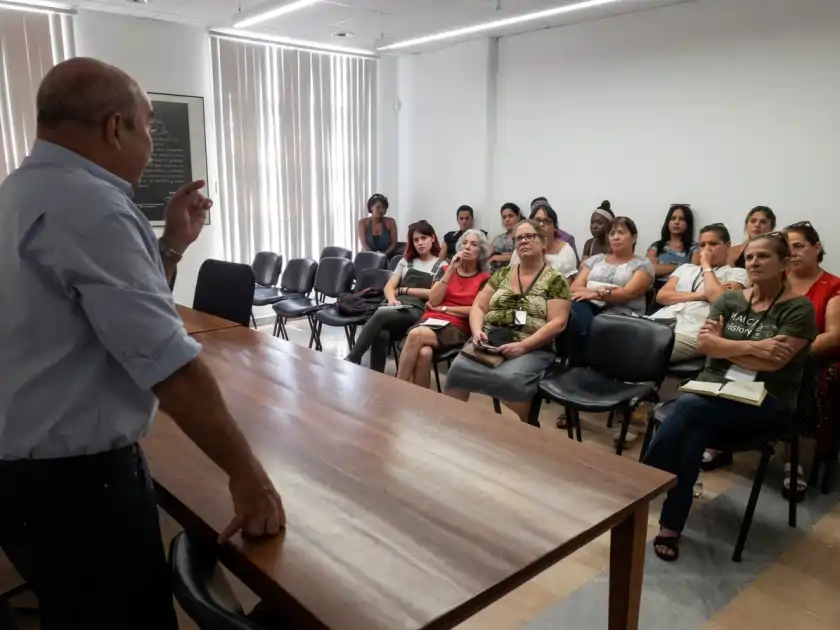

Consulta Inicial
Descripción confidencial del caso y las piezas por correo electrónico o formulario.
Dictámenes de valor asegurable, auditoría pericial de colecciones y peritaje de siniestros para el mercado internacional de alto patrimonio.

Pólizas de seguro suscritas sobre valoraciones desactualizadas o estimaciones empíricas derivan en infra-aseguramiento ruinoso o litigios interminables entre asegurador y asegurado ante un siniestro o daño parcial.
La metodología pericial de Luis Manuel Almeida Luis tiene validez internacional, fundamentada en la escuela del Dr. Alex J. Rosenberg, expresidente de la Appraisers Association of America. Esta base metodológica se ha aplicado en campañas de inventario, documentación y tasación de bienes estatales en embajadas de más de 15 países de Europa, Oriente Medio, África y Sudamérica (1999 y 2018).
Inventario técnico, catalogación formal y diagnóstico documental integral de acervos corporativos y familiares.
Cálculo preciso del coste de reposición o valor de mercado real exigido por las suscripciones de seguros (Fine Art Insurance).
Dictamen pericial sobre depreciación material, costes técnicos de restauración y pérdida de valor comercial post-daño.
Documentación pericial homologada bilingüe (ES/EN) para comités de riesgo, reaseguro y brokers internacionales.
Descripción confidencial del caso y las piezas por correo electrónico o formulario.
Revisión preliminar de la documentación o fotografías para determinar el alcance pericial.
Confirmación del alcance, honorarios y plazo de entrega antes de iniciar el dictamen.
Entrega del informe técnico firmado, con la fundamentación metodológica requerida.
"En la gestión de grandes patrimonios, valorar no es especular con lo que alguien pagaría mañana, sino calcular con exactitud lo que cuesta restaurar o reponer un bien en su mercado legítimo."Luis Manuel Almeida Luis · Perito Tasador
Respuesta 1
Respuesta 2
Respuesta 3
Estricto Secreto Profesional · Sin Compromiso

Su consulta se procesa bajo secreto profesional pericial.
Escríbanos directamente para iniciar una consulta confidencial sobre su caso.
Estricto Secreto Profesional · Sin Compromiso
Asistencia técnica basada en el archivo pericial de Almeida
Consultando dictámenes y archivo pericial...
Atención confidencial · Dictámenes bajo estricto secreto profesional